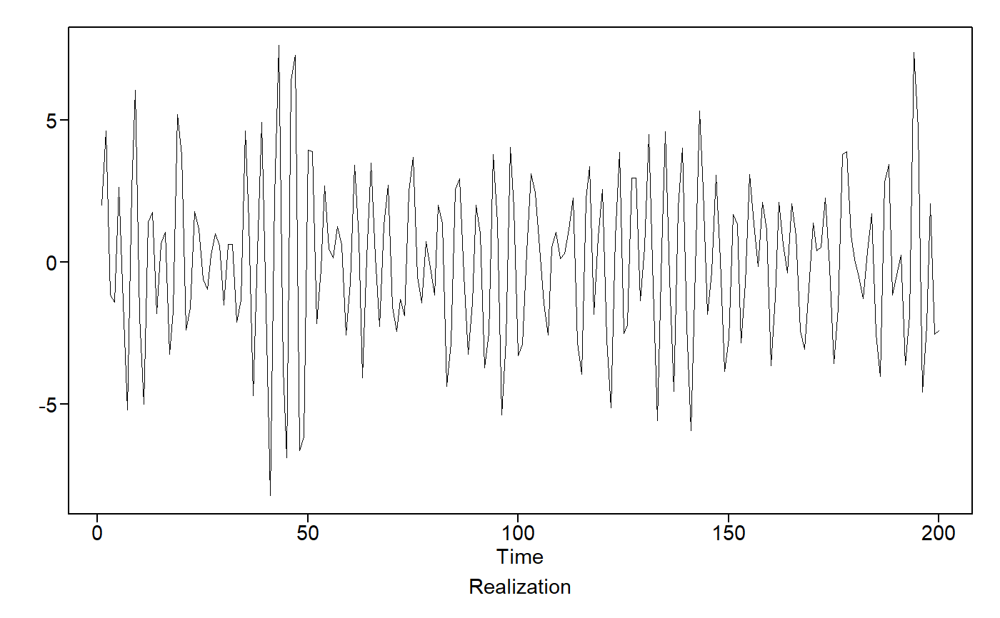

aicbic.Rdaicbic function returns the top 5 aic and bic values for an ARMA time series
aicbic( vec, p = 0:8, q = 0:5, parallel = FALSE, cl = NULL, silent = FALSE, merge = FALSE, sort_by = "aic" )
| vec | the vector (time series object) to operate on |
|---|---|
| p | integer vector of the ar order |
| q | integer vector of the ma order |
| parallel | whether or not to run in parallel |
| cl | the cluster in which to run on |
| silent | whether or not to run silently |
| merge | If TRUE, the AIC and BIC grids are merged so that it is easier to see which models are common between the two |
| sort_by | If merge = TRUE, then this is used to sort the merged dataframe valid options are 'aic' or 'bic' |
a list of data frames of top 5 aic and bic
aicbic(xs)#> Calculating aic for ARMA(0, 0) #> Calculating aic for ARMA(0, 1) #> Calculating aic for ARMA(0, 2) #> Calculating aic for ARMA(0, 3) #> Calculating aic for ARMA(0, 4) #> Calculating aic for ARMA(0, 5) #> Calculating aic for ARMA(1, 0) #> Calculating aic for ARMA(1, 1) #> Calculating aic for ARMA(1, 2) #> Calculating aic for ARMA(1, 3) #> Calculating aic for ARMA(1, 4) #> Calculating aic for ARMA(1, 5) #> Calculating aic for ARMA(2, 0) #> Calculating aic for ARMA(2, 1) #> Calculating aic for ARMA(2, 2) #> Calculating aic for ARMA(2, 3) #> Calculating aic for ARMA(2, 4) #> Calculating aic for ARMA(2, 5) #> Calculating aic for ARMA(3, 0) #> Calculating aic for ARMA(3, 1) #> Calculating aic for ARMA(3, 2) #> Calculating aic for ARMA(3, 3) #> Calculating aic for ARMA(3, 4) #> Calculating aic for ARMA(3, 5) #> Calculating aic for ARMA(4, 0) #> Calculating aic for ARMA(4, 1) #> Calculating aic for ARMA(4, 2) #> Calculating aic for ARMA(4, 3) #> Calculating aic for ARMA(4, 4) #> Calculating aic for ARMA(4, 5) #> Calculating aic for ARMA(5, 0) #> Calculating aic for ARMA(5, 1) #> Calculating aic for ARMA(5, 2) #> Calculating aic for ARMA(5, 3) #> Calculating aic for ARMA(5, 4) #> Calculating aic for ARMA(5, 5) #> Calculating aic for ARMA(6, 0) #> Calculating aic for ARMA(6, 1) #> Calculating aic for ARMA(6, 2) #> Calculating aic for ARMA(6, 3) #> Calculating aic for ARMA(6, 4) #> Calculating aic for ARMA(6, 5) #> Calculating aic for ARMA(7, 0) #> Calculating aic for ARMA(7, 1) #> Calculating aic for ARMA(7, 2) #> Calculating aic for ARMA(7, 3) #> Calculating aic for ARMA(7, 4) #> Calculating aic for ARMA(7, 5) #> Calculating aic for ARMA(8, 0) #> Calculating aic for ARMA(8, 1) #> Calculating aic for ARMA(8, 2) #> Calculating aic for ARMA(8, 3) #> Calculating aic for ARMA(8, 4) #> Calculating aic for ARMA(8, 5) #> Calculating bic for ARMA(0, 0) #> Calculating bic for ARMA(0, 1) #> Calculating bic for ARMA(0, 2) #> Calculating bic for ARMA(0, 3) #> Calculating bic for ARMA(0, 4) #> Calculating bic for ARMA(0, 5) #> Calculating bic for ARMA(1, 0) #> Calculating bic for ARMA(1, 1) #> Calculating bic for ARMA(1, 2) #> Calculating bic for ARMA(1, 3) #> Calculating bic for ARMA(1, 4) #> Calculating bic for ARMA(1, 5) #> Calculating bic for ARMA(2, 0) #> Calculating bic for ARMA(2, 1) #> Calculating bic for ARMA(2, 2) #> Calculating bic for ARMA(2, 3) #> Calculating bic for ARMA(2, 4) #> Calculating bic for ARMA(2, 5) #> Calculating bic for ARMA(3, 0) #> Calculating bic for ARMA(3, 1) #> Calculating bic for ARMA(3, 2) #> Calculating bic for ARMA(3, 3) #> Calculating bic for ARMA(3, 4) #> Calculating bic for ARMA(3, 5) #> Calculating bic for ARMA(4, 0) #> Calculating bic for ARMA(4, 1) #> Calculating bic for ARMA(4, 2) #> Calculating bic for ARMA(4, 3) #> Calculating bic for ARMA(4, 4) #> Calculating bic for ARMA(4, 5) #> Calculating bic for ARMA(5, 0) #> Calculating bic for ARMA(5, 1) #> Calculating bic for ARMA(5, 2) #> Calculating bic for ARMA(5, 3) #> Calculating bic for ARMA(5, 4) #> Calculating bic for ARMA(5, 5) #> Calculating bic for ARMA(6, 0) #> Calculating bic for ARMA(6, 1) #> Calculating bic for ARMA(6, 2) #> Calculating bic for ARMA(6, 3) #> Calculating bic for ARMA(6, 4) #> Calculating bic for ARMA(6, 5) #> Calculating bic for ARMA(7, 0) #> Calculating bic for ARMA(7, 1) #> Calculating bic for ARMA(7, 2) #> Calculating bic for ARMA(7, 3) #> Calculating bic for ARMA(7, 4) #> Calculating bic for ARMA(7, 5) #> Calculating bic for ARMA(8, 0) #> Calculating bic for ARMA(8, 1) #> Calculating bic for ARMA(8, 2) #> Calculating bic for ARMA(8, 3) #> Calculating bic for ARMA(8, 4) #> Calculating bic for ARMA(8, 5)#> [[1]] #> p q aic #> 18 2 5 0.4984693 #> 17 2 4 0.5104194 #> 23 3 4 0.5201498 #> 29 4 4 0.5282774 #> 51 8 2 0.5357223 #> #> [[2]] #> p q bic #> 17 2 4 0.6258605 #> 25 4 0 0.6262215 #> 18 2 5 0.6304020 #> 26 4 1 0.6498553 #> 31 5 0 0.6504187 #>